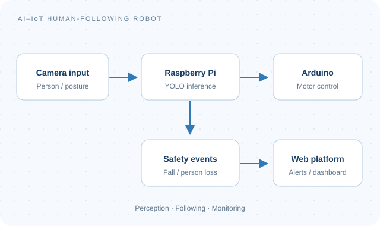

01

Machine Learning & Communications
- Learning-based cooperative spectrum sensing for cognitive radio networks.
- Signal processing and machine learning for intelligent wireless systems.
Undergraduate Student in Electronics & Telecommunications Engineering
Ton Duc Thang University · Ho Chi Minh City, Vietnam
I am an Electronics and Telecommunications Engineering undergraduate student at Ton Duc Thang University, Vietnam. My research focuses on secure and energy-efficient wireless communications, with interests in physical-layer security, RF energy harvesting, backscatter-enabled IoT, and reconfigurable intelligent surfaces.
I am an Undergraduate Researcher with AITECH and a Research Intern with WiCOM. I combine analytical modeling and MATLAB Monte Carlo simulations with practical projects in machine learning, computer vision, and embedded systems.


ACADEMIC & RESEARCH JOURNEY
B.Eng. · Electronics & Telecommunications Engineering
Undergraduate Researcher
Ton Duc Thang University
Second Prize · Ton Duc Thang University
Research Intern
Electronics & Telecommunications Engineering